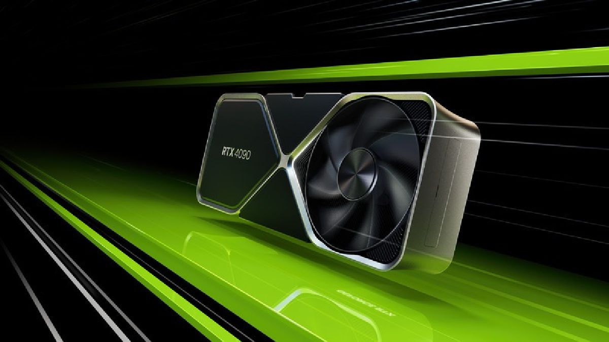

Intel lanza la familia de procesadores Intel Core de 13.ª generación
El reciente 27 de septiembre de 2022 en Intel Innovation, Intel reveló la familia de procesadores Intel Core™ de® 13ª generación, liderada por el Intel® Core™ i9-13900K de 13ª generación, el procesador de escritorio más rápido del mundo. La nueva familia Intel Core de 13ª generación incluye seis nuevos procesadores de escritorio desbloqueados con hasta 24 núcleos y 32 hilos y velocidades de reloj de hasta 5,8 GHz para la mejor experiencia de juego, transmisión y grabación. Presidida por el lanzamiento de los procesadores Intel Core 'K', la familia de equipos de escritorio de la 13ª generación de Intel Core estará compuesta por 22 procesadores y más de 125 diseños de sistemas asociados, proporcionando una experiencia incomparable tanto en el rendimiento de las aplicaciones como en la compatibilidad de las plataformas. Los entusiastas pueden aprovechar las mejoras de rendimiento de los procesadores Intel Core de 13.ª generación con las motherboards de chipset Intel® 600 existentes o de la nueva serie Intel® 700. Gracias a la compatibilidad con la memoria DDR5 más reciente y a la compatibilidad con la memoria DDR4, los usuarios pueden disfrutar de las ventajas de los Intel Core de 13ª generación y personalizar su configuración en función de sus preferencias de características y presupuesto.
Nuevamente estamos aumentando los estándares de rendimiento de las PC con nuestra última generación de procesadores Intel Core de 13ª generación, comentó Michelle Johnston Holthaus, vicepresidenta ejecutiva y directora general del Grupo de Computación de Clientes de Intel. "La familia Intel Core de 13.ª generación es el último ejemplo de cómo Intel está permitiendo que ocurran experiencias increíbles en el PC, a escala y en todos los segmentos de productos de PC. Si combinamos esto con un ecosistema de socios líder en la industria y nuevas soluciones como Intel Unison, juntos estamos demostrando al mundo lo que es realmente posible con la experiencia PC de cara al futuro”.
NVIDIA presenta su nueva serie GeForce RTX 40
Estarán disponibles a partir del 12 de octubre, la más potente es la GeForce RTX 4090 que cuenta con 16, 384 CUDA CORE y con una frecuencia de 2520Mhz. La 3ra Generación de tarjetas graficas RTX lleva el nombre de la matemática "Ada Lovelace" quién a menudo fué considerada como la primera programadora de computadoras del mundo. Lo impresionante del avance, es que se anunció la colaboración con TSMC para crear una litografía basada en 4N "que en realidad es 5 Nanómetros", esto le permitió integrar un número de 76 mil millones de transistores y de más de 18,000 núcleos cuda; hablamos de 70% más de la generación Ampere."
En el portal de Nvidia se observa los resultados mostrados en el live: Juegos probados, Flight Simulator, Cyberpunk 2077 En resolución 3840x2160, settings máximos, y el DLSS activado en modo rendimiento. Plataforma utilizada: i9 - 12900k, 32GB, Windows 11 Los resultados son impactantes ante la presencia de una comparativa directa hacia la reciente GeForce RTX 3090Ti. Recordar que Nvidia siempre muestra resultados Vs Otra Nvidia.
Por supuesto, se debe a su nueva tecnologia llamada: Shader Execution Reordering, una tecnología brillante que reprograma el trabajo sobre la marcha otorgando una aceleración de 2 a 3 veces para el Ray Tracing Su función es reorganizar las cargas de trabajo de sombreado, agrupando las que son similares para tener un resultado más óptimo. La otra mejora es la presencia de un nuevo rendimiento DLSS3.
Fué inesperado ver en la presentación de Cyberpunk un juego que sufrió un sin números de críticas el día de su lanzamiento y que fué un duro desafío para las gráficas Amper Sin embargo, el resultado fué alentador al mostrarse con un excelente rendimiento en 4k.
Esto sin duda es una muestra de la confianza de la compañía hacia este nuevo producto que estaremos por ver en nuestro territorio en octubre.
Si llegaste hasta aquí, he de contarte que estarían próximas a llegar primero las GeForce RTX 4090; sin embargo, las RTX 4080 estarían llegando para Noviembre. Los precios aún son especulativos y según la nota de prensa remitida por Nvidia a el diario el comercio los precios podrían bordear los S/. 9.399.00.